Naval Technology
From battleships to nuclear submarines and aircraft carriers, U.S. naval technology has maintained maritime superiority for decades.
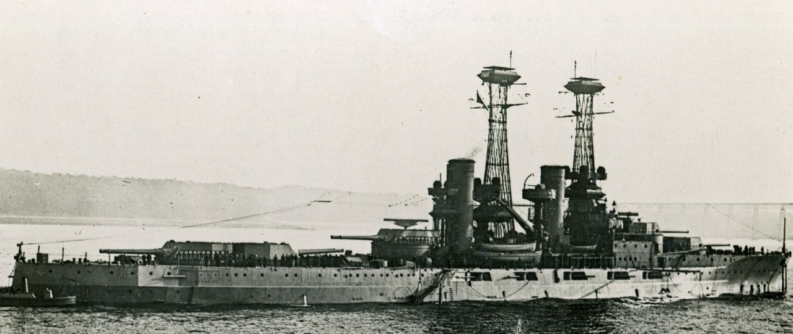
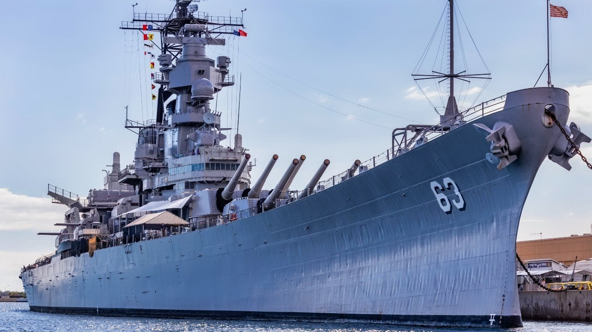
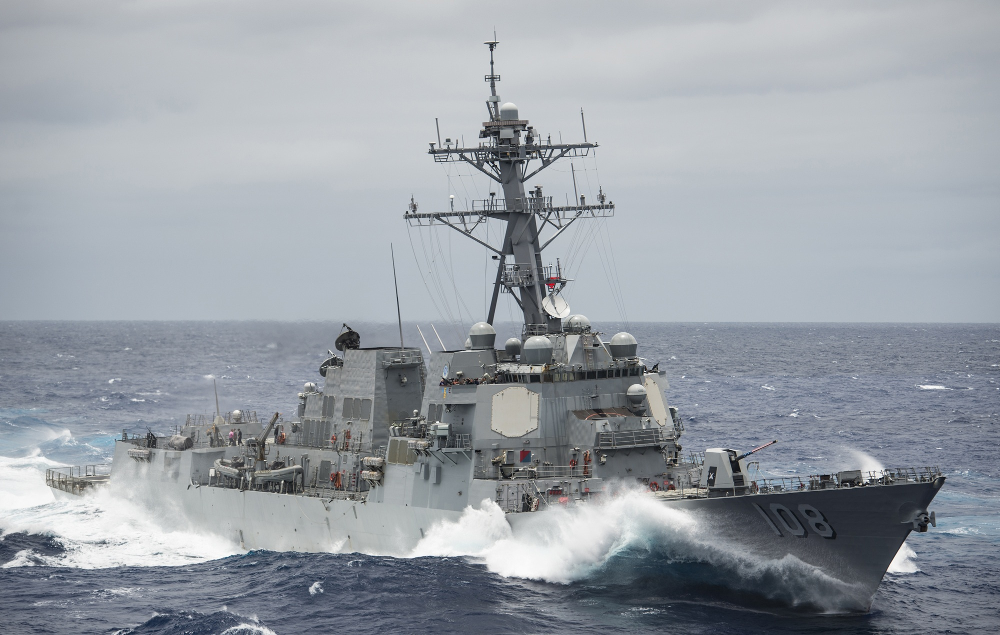
The evolution of U.S. surface combat ships reflects a continuous drive for greater speed, firepower, and technological superiority at sea. Early in the 20th century, naval power was dominated by large battleships such as dreadnoughts, which relied on massive guns and heavy armor as the primary means of naval warfare. Ships like the USS Delaware represented this era of battleship dominance, where naval strategy focused on large fleet engagements and gun-based combat. However, the rise of faster and more versatile ships began to challenge the role of traditional battleships, leading to major changes in naval design and strategy.
During World War II, battleships such as the USS Missouri played a major role in naval warfare, shore bombardment, and fleet support operations. While still powerful, they were increasingly overshadowed by aircraft carriers and more flexible surface ships. At the same time, destroyers and cruisers became more important for escorting fleets, protecting carriers, and engaging enemy submarines and aircraft. This period marked a transition away from battleship-centered warfare toward more balanced and multi-role naval task forces.
In the modern era, ships such as the Arleigh Burke-class destroyers represent the peak of U.S. surface combat capability. Equipped with the Aegis Combat System, advanced radar, and vertical launch missile systems, these ships are capable of anti-air, anti-submarine, and long-range strike missions. Unlike earlier battleships that relied on large guns, modern surface ships use precision-guided missiles and integrated digital combat systems. This evolution highlights the shift from traditional gun-based naval warfare to highly advanced, networked, multi-mission surface combat operations.
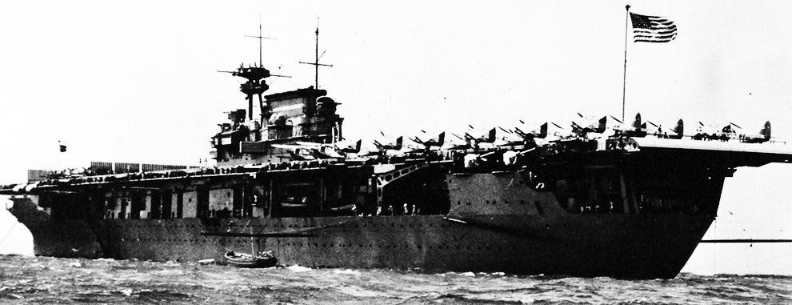
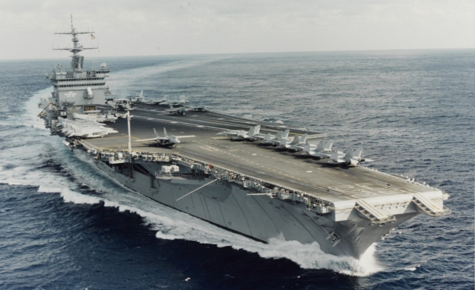
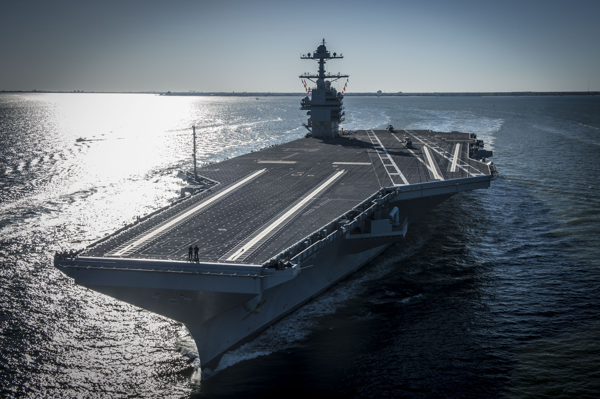
The evolution of U.S. aircraft carriers reflects a continuous push for greater range, air power, and global military influence. Early carriers emerged during the interwar period and World War II, when naval aviation began to prove its strategic value. Ships such as the USS Enterprise (CV-6) were among the most successful carriers of the war, launching aircraft for reconnaissance, air strikes, and fleet defense across the Pacific. These early carriers were smaller by modern standards and relied on piston-engine aircraft, but they marked a major shift in naval warfare from battleship dominance to air power at sea.
During the Cold War, aircraft carriers became larger, more advanced, and capable of sustained global operations. Nuclear-powered carriers such as the USS Enterprise (CVN-65) revolutionized naval aviation by eliminating the need for frequent refueling and significantly increasing operational range and endurance. These ships supported jet-powered aircraft and became central to U.S. naval strategy, serving as mobile airbases capable of rapid deployment anywhere in the world. This era established carriers as the primary tool of American power projection during global conflicts and geopolitical tensions.
In the modern era, carriers such as the Gerald R. Ford-class represent the most advanced naval platforms ever built. Equipped with electromagnetic aircraft launch systems (EMALS), advanced radar, and improved automation, these ships increase efficiency while reducing crew requirements. They are designed to operate advanced aircraft such as the F-35C, allowing for superior stealth, strike capability, and situational awareness. This evolution demonstrates the transformation of carriers into fully integrated, high-tech floating airbases capable of sustaining global air dominance.
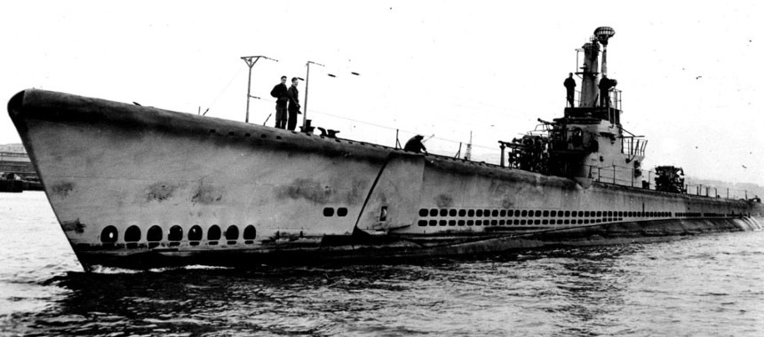
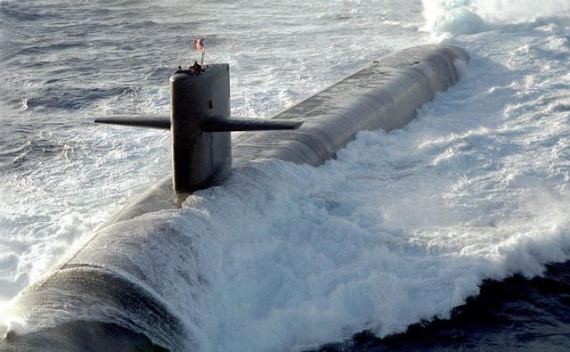

The evolution of U.S. submarines reflects a continuous push for stealth, endurance, and underwater combat superiority. Early submarines in World War II, such as the Gato-class, were diesel-electric vessels designed for long-range patrols and attacks on enemy shipping. These submarines played a critical role in the Pacific Theater by disrupting supply lines and gathering intelligence while remaining hidden beneath the surface. Although effective, they still required regular surfacing to recharge batteries, which limited their endurance and exposed them to detection.
During the Cold War, submarine technology advanced significantly with the introduction of nuclear propulsion, which transformed underwater warfare. Nuclear submarines eliminated the need to surface frequently, allowing vessels to remain submerged for months at a time. This era also saw the development of ballistic missile submarines capable of launching nuclear weapons from hidden positions, greatly increasing strategic deterrence. Submarines such as early nuclear attack and missile classes expanded the role of underwater warfare from tactical missions to global strategic operations.
In the modern era, U.S. submarines such as the Virginia-class and Ohio-class represent the most advanced underwater combat systems ever developed. These vessels feature advanced sonar, stealth coatings, and highly integrated digital combat systems that allow them to operate undetected in nearly any environment. Modern submarines can launch precision cruise missiles, conduct intelligence missions, and maintain nuclear deterrence with extreme accuracy and survivability. This evolution highlights the transformation of submarines from limited stealth vessels into highly advanced strategic platforms essential to modern naval power.
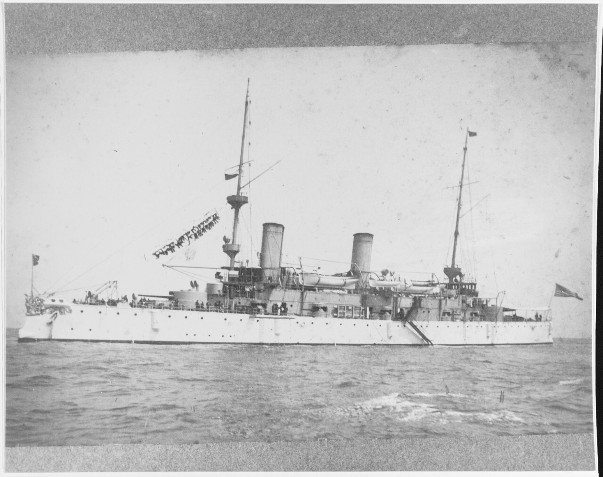
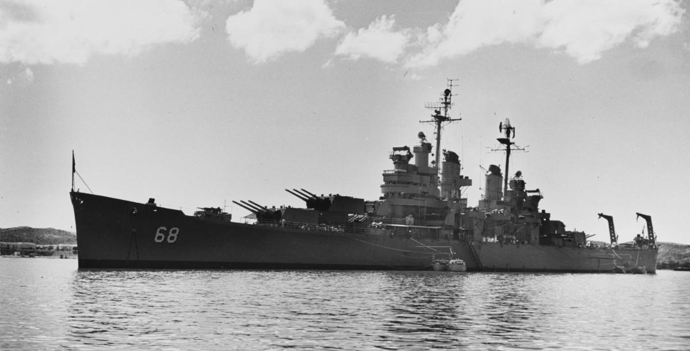
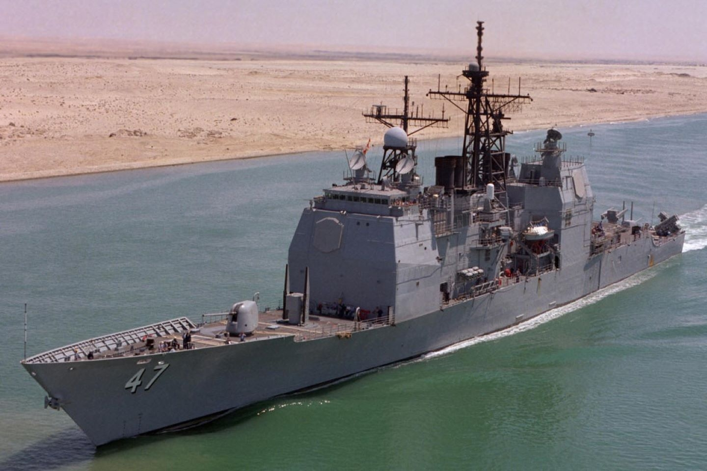
The evolution of U.S. cruisers reflects a continuous shift from traditional gun-based naval warfare to advanced missile-driven combat systems. In the early 20th century, cruisers such as the USS Olympia were used for scouting, fleet protection, and long-range naval operations. These early protected cruisers relied entirely on large naval guns and armor for combat effectiveness, serving as key support ships within larger fleets. Their role emphasized reconnaissance and surface engagement during an era when naval warfare was dominated by artillery-based combat.
During World War II, cruisers such as the USS Baltimore became larger, more heavily armored, and significantly more powerful in both firepower and versatility. These ships played important roles in fleet engagements, convoy protection, and shore bombardment operations in both the Atlantic and Pacific theaters. Advancements in radar and fire-control systems improved targeting accuracy and effectiveness, allowing cruisers to operate more efficiently in fast-moving naval battles. This period marked the peak of traditional gun cruiser design before the rise of missile technology.
In the modern era, guided missile cruisers such as the USS Ticonderoga represent a major transformation in naval warfare technology. Instead of relying on large-caliber guns, these ships use advanced missile systems, including Tomahawk cruise missiles, and are equipped with the Aegis Combat System for integrated air and missile defense. Modern cruisers function as highly capable multi-role warships, providing fleet protection, strike capability, and command-and-control functions. This evolution demonstrates the shift from traditional artillery-based naval combat to precision missile warfare and advanced electronic systems.
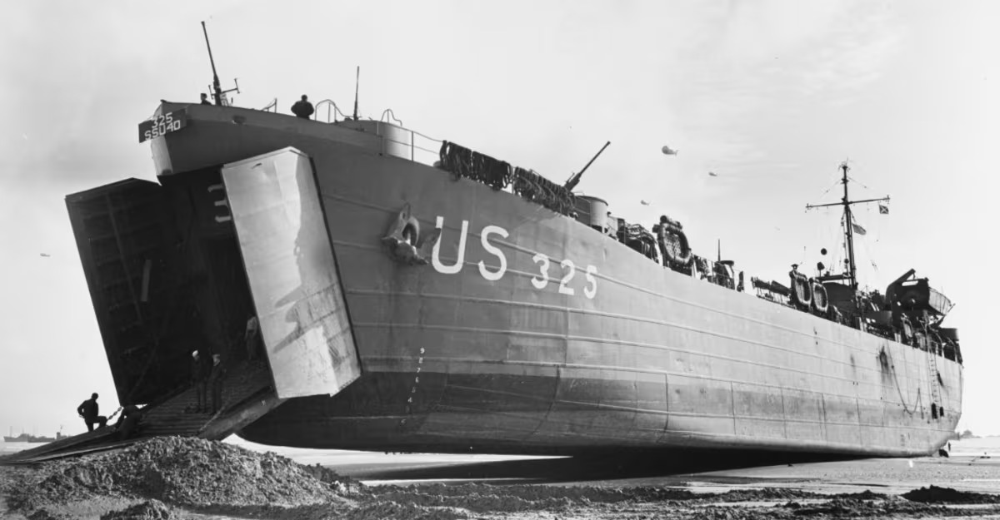
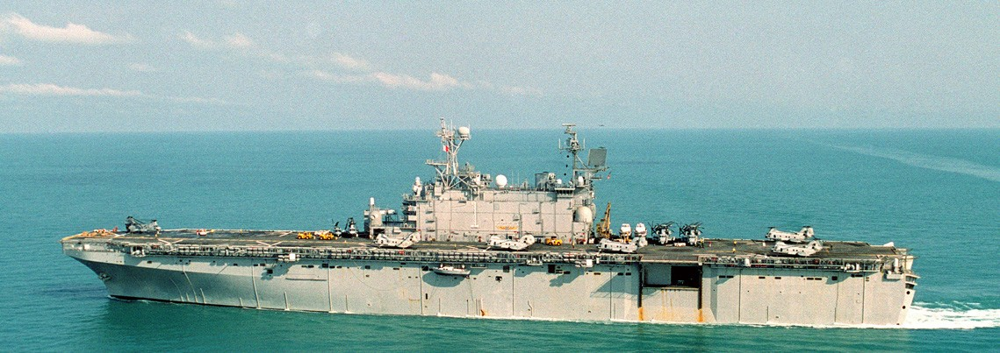
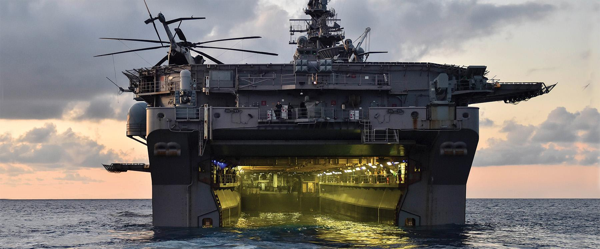
The evolution of U.S. amphibious assault ships reflects a continuous effort to improve the ability to project military power from sea to land. During World War II, landing ships such as the USS LST-325 were developed to transport tanks, vehicles, and troops directly onto enemy beaches. These ships played a critical role in large-scale amphibious invasions, including the Normandy landings, where rapid deployment of forces was essential. Although effective, these early vessels were slow and vulnerable, relying on direct beach landings to deliver equipment and personnel.
During the Cold War, amphibious warfare evolved with the introduction of ships such as the USS Tarawa (LHA-1), which incorporated helicopter operations into landing strategies. This allowed U.S. Marines to be deployed inland rather than only on coastal beaches, greatly increasing tactical flexibility and reducing exposure to coastal defenses. These ships also supported landing craft and improved command-and-control systems, making amphibious operations more coordinated and efficient. This period marked a major shift toward vertical assault capabilities in modern warfare.
In the modern era, ships such as the USS Wasp (LHD-1) represent highly advanced amphibious assault platforms capable of launching helicopters, landing craft, and short takeoff and vertical landing (STOVL) aircraft such as the F-35B. These vessels function as multi-role amphibious warfare ships, capable of supporting rapid global deployment of Marine Expeditionary Units. With advanced command systems, medical facilities, and aviation support, modern amphibious assault ships provide flexible response options for a wide range of military operations. This evolution demonstrates the transformation from simple beach landing ships to fully integrated sea-based assault platforms.
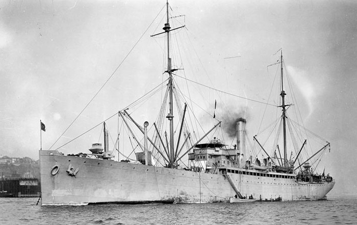
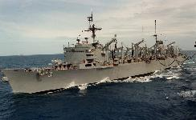
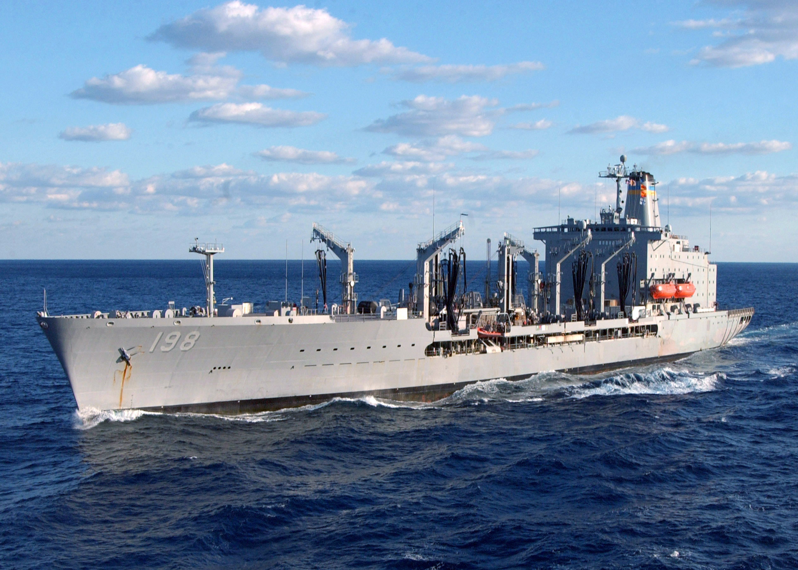
The evolution of U.S. naval support ships reflects a continuous need to sustain fleet operations across long distances and extended missions. During World War I, ships such as the USS Bridge were used as colliers and supply vessels, transporting coal, fuel, and basic provisions to warships at sea. These early support ships were essential for maintaining naval operations, as most ships still relied on coal power and required frequent resupply. However, their capabilities were limited, and fleets often had to operate near supply routes or friendly ports.
During the Cold War, naval logistics advanced significantly with ships such as the USS Sacramento (AOE-1), which introduced the concept of underway replenishment on a large scale. These fast combat support ships were capable of refueling, rearming, and resupplying warships while both vessels were underway, greatly increasing fleet endurance and operational flexibility. This innovation allowed U.S. naval forces to remain deployed for longer periods without returning to port, strengthening global naval presence during periods of geopolitical tension.
In the modern era, support vessels such as USNS Big Horn (T-AO-198) represent highly efficient and technologically advanced logistics platforms. These ships provide fuel, ammunition, food, and spare parts to carrier strike groups operating anywhere in the world. Equipped with modern navigation, transfer systems, and improved efficiency, they ensure continuous fleet readiness in global operations. This evolution demonstrates how naval logistics has become a critical force multiplier, enabling sustained naval power projection across all oceans.